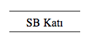

28. BÖLÜM
Beni nereye götürüyorlar?
Langdon telaşla Anderson ve Sato ile birlikte Kongre Binası’nın derinliklerine doğru ilerlerken, aşağı doğru attığı her adımda kalbinin biraz daha hızlı çarptığını hissediyordu. Yolculuğa Rotunda’nın batı revağından başlamışlar, mermer basamaklardan indikten sonra, Rotunda’nın tam altındaki ünlü mahzene açılan geniş kapıya varmışlardı.
Kongre Binası Kriptası.
Burada hava daha ağırdı ve Langdon şimdiden kapalı yerde kalma korkusunun depreştiğini hissediyordu. Kriptanın alçak tavanı ve içerideki hafif ışık, başlarının üstündeki geniş taş zemini destekleyen kırk adet Dorik sütunu vurguluyordu. Sakinleş Robert.
Dairesel alanın sol tarafına doğru hızla dönen Anderson, “Bu taraftan,” dedi.
Neyse ki bu kriptada ceset yoktu. Bunun yerine heykeller, Kongre Binası’nın bir maketi ve resmi cenaze törenlerinde tabutların yerleştirildiği katafalklar için kullanılan alçak bir depo vardı. Grup, zeminin tam ortasında bir zamanlar Sonsuz Ateş’in yandığı yerdeki dört köşeli mermer pusulaya hiç bakmadan geçip gitti.
Anderson acelesi varmış gibi davranıyordu, Sato ise yine başını BlackBerry’sine gömmüştü. Langdon, buradan her gün hükümetle yapılan telefon görüşmelerini desteklemek için Kongre Binası’nın her köşesine gezgin hizmet sağlayıcısı döşendiğini duymuştu.
Kriptadan verevine geçtikten sonra loş ışıklı bir girişe geldiler ve sarmal koridorların arasında dolaşmaya başladılar. Geçitlerde, üzerlerinde numaralar bulunan kapılar dizilmişti. Langdon kıvrılarak ilerlerken kapıların üstündeki sayıları okudu.
S154... S153... S152...
Bu kapıların ardında ne olduğuna dair hiçbir fikri yoktu ama artık en azından bir şey açıklığa kavuşmuştu; Peter Solomon’ın avcunun içindeki dövmenin anlamı. SBB13, ABD Kongre Binası’nın bir yerlerindeki, numaralandırılmış bir kapı olmalıydı.
Çantasını kaburgalarına iyice yaslayıp, Solomon’ın verdiği küçük paketin SBB13 diye işaretlendirilmiş bir kapıyla ne ilgisi olabileceğini merak eden Langdon, “Bu kapılar ne?” diye sordu.
Anderson, “Ofisler ve depolar,” dedi. Sato’ya bir göz atıp, “Özel ofisler ve depolar,” diye ekledi.
Sato başını BlackBerry’sinden kaldırıp bakmadı bile.
Langdon, “Küçük görünüyorlar,” dedi.
“Pek çoğu büyük bir dolap kadardır ama hâlâ D.C.’nin en gözde gayri menkulleri olduklarını söyleyebilirim. Burası ilk Kongre Binası’nın kalbi, eski Senato ise iki kat üstümüzde.”
Langdon, “Peki ya SBB?” diye sordu. “Orası kimin ofisi?”
“Kimsenin. SBB özel bir depodur ve belirtmeliyim ki duyduğumda çok şaşırdım...”
Kafasını BlackBerry’sinden kaldırmayan Sato, “Şef Anderson,” diyerek lafını kesti. “Siz bizi oraya götürün yeter.”
Dişlerini sıkan Anderson, artık karma bir depolama tesisiyle destansı bir labirente benzemeye başlayan bu yerde onlara sessizce rehberlik etti. Hemen her duvarda, bu koridorlar ağındaki ofislerin yerini göstermeye çalışan, ileri ve geri işaretleriyle yönlendirme tabelaları vardı.
S142- S152...
ST1- ST70...
H1-H166 & HT1- HT67...
Langdon buradan tek başına çıkabileceğini hiç sanmıyordu. Burası bir labirent. Tek fark edebildiği, Senato veya Temsilciler Meclisi tarafında bulunmalarına bağlı olarak ofis numaralarının S ya da H harşeriyle başladıklarıydı. ST ve HT diye adlandırılan yerler, Anderson’ın Teras Katı dediği yerde olmalıydı.
Hâlâ SBB’nin esamesi yok.
Sonunda, anahtar kartla açılan ağır bir çelik kapının önüne vardılar.

Langdon yaklaştıklarını hissetti.
Anahtarına uzanan Anderson tereddüt etti. Sato’nun taleplerinden rahatsızlık duyuyormuş gibiydi.
Sato, “Şef,” diyerek onu harekete geçirdi. “Bütün gece bekleyemeyiz.”
Anderson isteksizce anahtar kartını yerleştirdi. Çelik kapı aralandı. İterek açınca, ardındaki antreye adımlarını attılar. Ağır kapı arkalarından tıkırdayarak kapandı.
Langdon’ın bu girişte ne görebileceği konusunda en ufak bir fikri yoktu ama karşısında duran manzarayı beklemediği kesindi. Aşağı doğru inen bir merdivene bakıyordu. Olduğu yerde durup, “Yine mi aşağı iniyoruz?” dedi. “Kriptanın altında bir kat daha mı var?”
Anderson, “Evet,” dedi. “SB Senato Bodrumu’nun kısaltılmışıdır.”
Langdon kendi kendine homurdandı. Tanrım, ne harika!